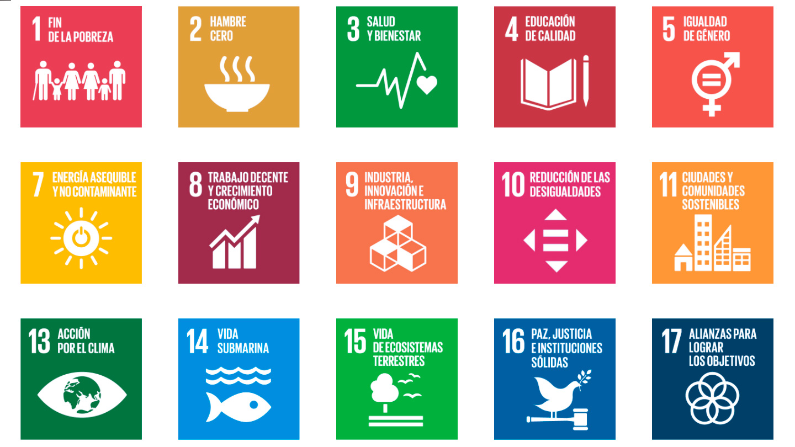
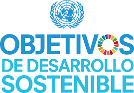
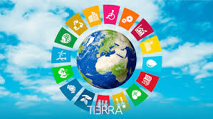
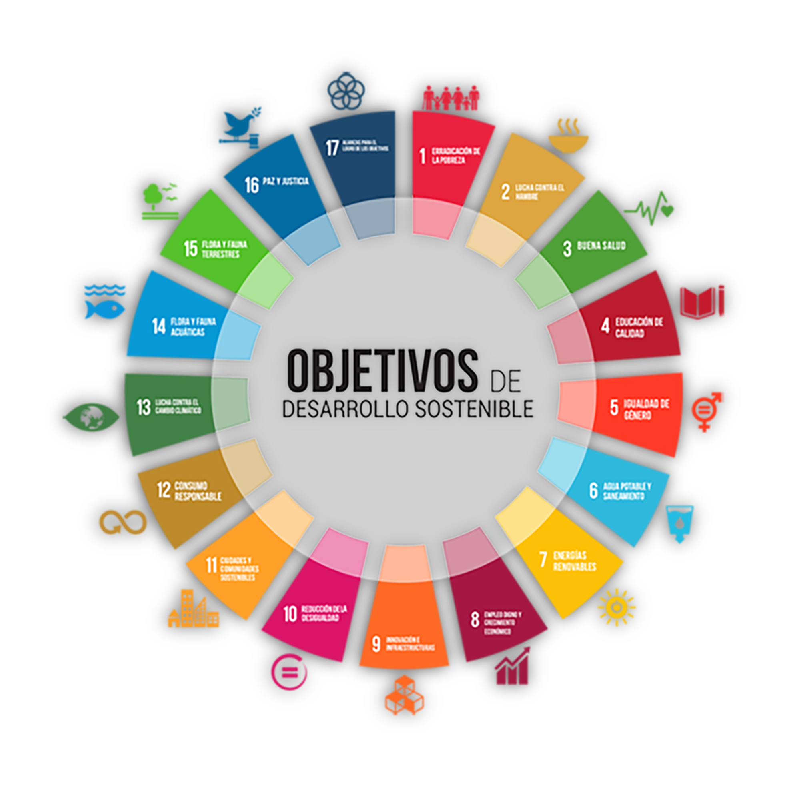

¿QUE SON LOS OBJETIVOS DE DESARROLLO SOSTENIBLE?
Son Los Objetivos de Desarrollo Sostenible (ODS), también conocidos como Objetivos Globales, fueron adoptados por las Naciones Unidas en 2015 como un llamamiento universal para poner fin a la pobreza, proteger el planeta y garantizar que para el 2030 todas las personas disfruten de paz y prosperidad. Los 17 ODS están integrados: reconocen que la acción en un área afectará los resultados en otras áreas y que el desarrollo debe equilibrar la sostenibilidad social, económica y ambiental. Los países se han comprometido a priorizar el progreso de los más rezagados. Los ODS están diseñados para acabar con la pobreza, el hambre, el sida y la discriminación contra mujeres y niñas. La creatividad, el conocimiento, la tecnología y los recursos financieros de toda la sociedad son necesarios para alcanzar los ODS en todos los contextos.
HISTORIA DE LOS OBJETIVOS DE DESARROLLO SOSTENIBLE
Tal y como su nombre lo dice, los objetivos de desarrollo sostenible son un conjunto de objetivos, metas e indicadores universales que todos los Estados miembros de la ONU deberían conseguir. Para ello, estos fueron agrupados en un documento general que es más conocido como la Agenda 2030. Así pues, se tiene como principal meta llegar a cada uno de estos objetivos para el año en cuestión. Muy poco se sabe acerca de sus orígenes, y es que, hasta hace muy poco, eran conocidos como los ODM, ochos objetivos de desarrollo internacional que los 192 miembros de las Naciones Unidas y una serie de organizaciones internacionales acordaron alcanzar para el año 2015 Con el objetivo principal de erradicar la pobreza. Evidentemente, no todos los miembros del equipo fueron capaces de lograr tal meta. A pesar de ello, se espera que, a través de los ODS se tenga más claro el panorama a través del cual se logren cada uno de los objetivos. Los Objetivos de Desarrollo Sostenible (ODS) son 17 objetivos que surgen a raíz de la Cumbre de las Naciones Unidas sobre el Desarrollo Sostenible, celebrada del 25 al 27 de septiembre de 2015 en Nueva York. Como producto de esta cumbre, la Asamblea General de las Naciones Unidas aprobó los objetivos en un documento de cuarenta páginas titulado “transformar nuestro mundo: la Agenda 2030 para el Desarrollo Sostenible”, más conocido como Agenda 2030. Tiempo atrás, desde 1992, en la Conferencia de las Naciones Unidas sobre el Ambiente y Desarrollo de Río de Janeiro, se estaba hablando ya de una agenda, la Agenda 21, con la cual se abordarán los problemas urgentes y se prepararía al mundo para el siglo 21, pues se reconocía que la humanidad estaba enfrentando un momento definitivo en su historia. Y es que, los desafíos mundiales como el aumento de las desigualdades entre y al interior de las naciones, el empeoramiento de la pobreza, el hambre, las enfermedades y el deterioro continuo de ecosistemas de los que depende el bienestar humano requerían de la atención de todas las naciones.
Por tanto, la preocupación por integrar el ambiente y el desarrollo en un futuro próspero se reflejó en la Agenda 21, un documento que, por primera vez, reflejaba un compromiso político y un consenso global con alto nivel de cooperación para el desarrollo y el ambiente. Dicha agenda se organizó en:

Es en la Cumbre del Milenio (Nueva York en el 2000) se plantearon los Objetivos de Desarrollo del Milenio con 8 objetivos que fundaron una iniciativa mundial:
A través de este proyecto se reunieron los reportes de expertos y analistas a nivel global para tomar decisiones políticas informadas. Es así que se basó en estudios sobre los siguientes desafíos: